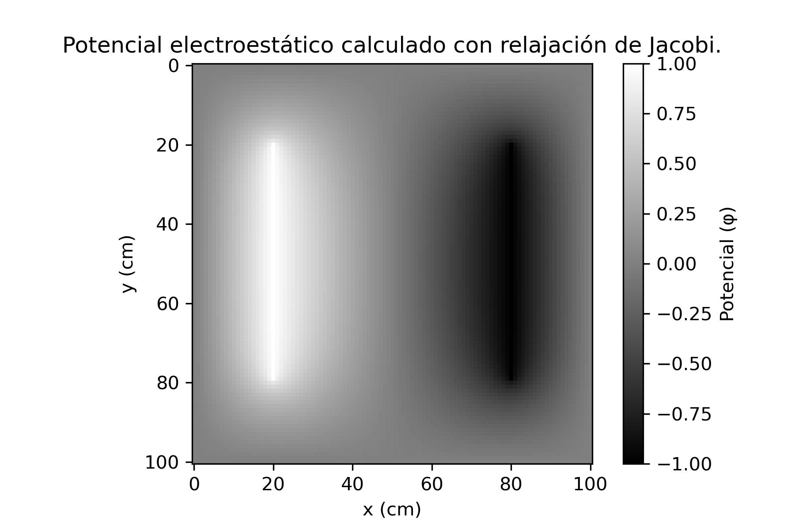

Relajación Jacobi
Este script pretende implementar el método de relajación de Jacobi para resolver la ecuación de Laplace. Es útil en aplicaciones como simulaciones de potencial eléctrico, y facilita la representación grafica de la solución.
Código
import numpy as np
def jacobi_relaxation(N=100, tolerance=1e-5, L=10, V1=1, V2=-1):
# Iniciación de phi
phi = np.zeros((N + 1, N + 1), dtype=float)
# Condiciones iniciales (placas)
phi[int((N/L)*2):int((N/L)*8), int((N/L)*2)] = V1
phi[int((N/L)*2):int((N/L)*8), int((N/L)*8)] = V2
delta = 1.0
its = 0
while delta > tolerance:
its += 1
phi_new = phi.copy()
phi_new[1:N, 1:N] = (1.0/4.0) * (
phi[2:N + 1, 1:N] +
phi[0:N - 1, 1:N] +
phi[1:N, 2:N + 1] +
phi[1:N, 0:N - 1]
)
# Restauro el potencial en las placas
phi_new[int((N / L) * 2):int((N / L) * 8), int((N / L) * 2)] = V1
phi_new[int((N / L) * 2):int((N / L) * 8), int((N / L) * 8)] = V2
delta = np.max(np.abs(phi - phi_new))
phi = phi_new
return phi, its
jacobi_vals, iterations = jacobi_relaxation()
print(iterations)
En el jupyter:
import matplotlib.pyplot as plt
import matplotlib.cm as cm
plt.imshow(jacobi_vals)
plt.gray()
plt.show()
Converge tras 1803 iteraciones.
Gráfico 